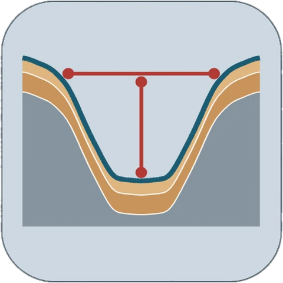
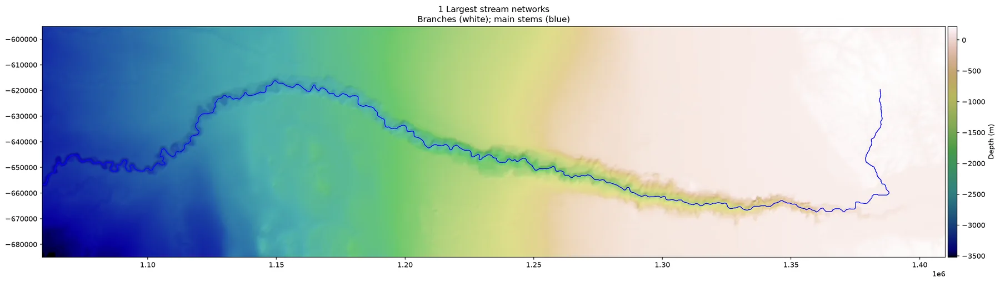
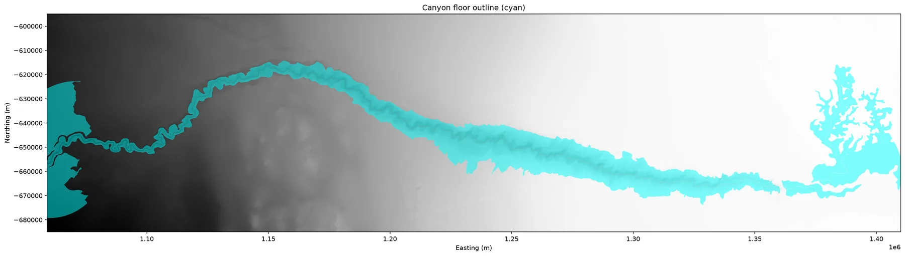
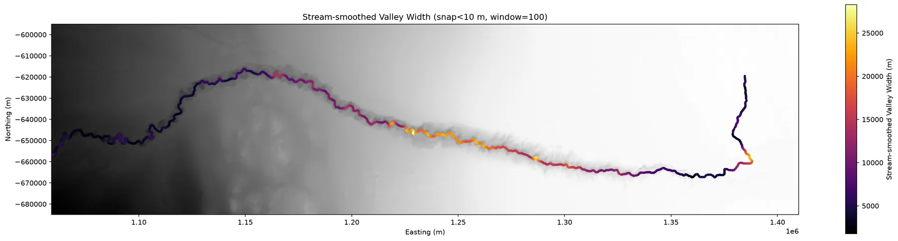
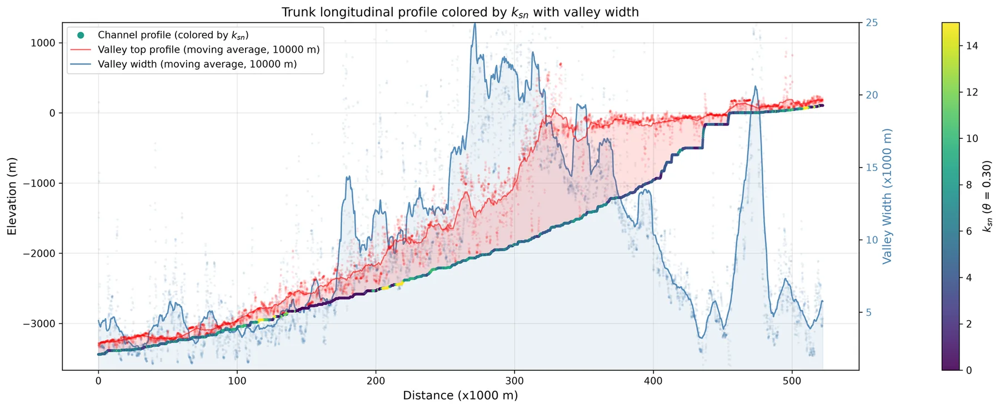
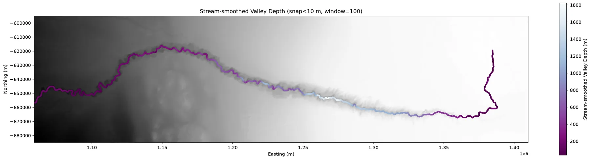

Python · Valley width
pyValleyWidth
pyValleyWidth measures valley and canyon width from a digital terrain model or a bathymetry grid.
- Version0.1.2
- LicenseAGPL-3.0 or later

Overview
pyValleyWidth was first made to measure the width of mountain river valleys. It now also works on the seafloor. At each cross-section it finds where the valley or canyon “spills over” its rims, so the edge can sit at a different height along the channel instead of one fixed value. Together with channel-steepness and long-profile tools, this gives a quick way to see how a canyon’s width, depth, and steepness change downstream.
It is built on pytopotoolbox and follows Paul Morgan’s ElevationThresholdValleyWidth workflow. The code has not been peer-reviewed or fully validated, so use it with caution.
Example: Congo Canyon
The Congo Canyon notebook runs the method on a 60 m bathymetry grid offshore West Africa.





Data credit: derived from the Ifremer Congo (Zaire) deep-sea fan multibeam bathymetry compilation (ZAIANGO 1 and 2, ZAIANGOCAR, ZAIANGO-OBS-BIOL, REPREZAI Leg 1, WACS, and CONGOLOBE cruises); cropped, resampled to 60 m, and smoothed. Ifremer, Géosciences Marines (2019), https://doi.org/10.12770/d1076601-82a9-42a2-9d30-d0be8b2481a7.
Key features
Two ways to find the edge
One fixed height above the channel everywhere, or a rim found separately at each cross-section.
Land and seafloor
Works on mountain terrain models and on seafloor bathymetry.
Downstream profiles
Width, depth, and channel steepness (ksn) along the channel, with maps and long profiles.
Two example notebooks
The Congo Canyon (seafloor) and Big Tujunga (mountain valley) examples run from top to bottom.
Installation
pip install pyvalleywidthThis also installs topotoolbox.
Citation
Software
Lai, L.S.-H. (2026) pyValleyWidth, Zenodo, https://doi.org/10.5281/zenodo.23656980.
If you use the threshold method, also cite:
Method
Morgan, P. M., Grant, A., Struble, W., LaHusen, S., and Duvall, A. (2026) The damability function: a probabilistic approach to regional landslide dam susceptibility analysis applied to the Oregon Coast Range, USA. Natural Hazards and Earth System Sciences, 26, 1745–1766, https://doi.org/10.5194/nhess-26-1745-2026.
Please also cite pytopotoolbox:
pytopotoolbox
William Kearney, Boris Gailleton, Theophil Bringezu, ginaarnau, Luca Malatesta, François Faure, & Xiaochuan Ye. (2026). TopoToolbox/pytopotoolbox [Computer software]. Zenodo. https://doi.org/10.5281/zenodo.16742408
pyValleyWidth is under the GNU Affero General Public License 3.0 or later. pytopotoolbox is under the GNU GPL.
How it works
What is in the repository
- An importable package: valley classification, swath widths, an optional variable rim, smoothing along the stream network, the normalized steepness index ksn, and river-profile figures.
valley_width_example.ipynb, an end-to-end run on the Big Tujunga DEM shipped with TopoToolbox. It routes flow, can mask to the largest catchment, measures width two ways, and draws maps, ksn, longitudinal and chi–elevation profiles, and threshold or excess topography. The notebook is the user guide, including notes on stream area, the HAND threshold, swath spacing, smoothing, and saturated transects.
Method
Width comes from height above the channel network, a valley polygon, and cross-stream swaths. A profile perpendicular to the channel can overestimate width on a tight bend, so the workflow can resample and smooth widths along the network with a moving window. A variable-rim mode is also available: each transect is clipped to the local divides, and the rim is picked from a sweep of how width changes with the height threshold.
Pipeline
- Terrain and streams. Flow routing and stream extraction with pytopotoolbox. An optional mask keeps the largest connected catchment, so later steps use one basin.
- Valley mask, two choices inside
dem2widths. A constant HAND threshold treats every cell below a fixed height above the nearest stream as valley, and returns widths and that height field. The variable-rim mode clips each transect to the local drainage divides, sweeps the HAND threshold upward, and takes the last qualifying peak in dW/dT between a noise floor (min_dwdt) and a divide-scale ceiling (max_dwdt). Those per-transect thresholds are lifted onto the stream nodes, smoothed with a rolling median, and passed to the same flood fill. That mode also returns a valley depth.plot_transect_diagnosticdraws one transect (map, HAND profile, and the dW/dT sweep) so the two thresholds can be chosen by eye. - Widths from swaths. Cross-stream profiles on the valley raster, with an optional filter when a transect is too short to be trusted.
- Widths on the network. Raw widths at the sample points, then a gap-filled, vertex-averaged, Gaussian-smoothed field (
smooth_valley_width_on_stream_network). - Add-ons in the example notebook. ksn from a slope–area fit with fixed concavity, longitudinal and chi–elevation profiles with the trunk highlighted, a trunk profile that pairs width with valley-top height in the variable-rim mode, and threshold or excess topography at a chosen slope (35° in the example).
Package pieces
dem2widthsruns routing, drops short streams, builds the valley mask, measures swaths, and returns drainage area and gradient at the width samples.valleyclass_elev,swath_width, andpeak_valley_widthbuild the mask and find the rim in the variable-threshold mode.plot_transect_diagnosticis the three-panel check at one map point.stream_utilsdrops short streams and builds the swath geometry.valley_width_streamflattens stream coordinates, smooths width on the network, and orders samples along the trunk.ksn_analysishandles the slope–area fit, ksn, smoothing, and filling empty values along streams.river_profile_plotsdraws the longitudinal profile, the chi–elevation profile, the paired ksn and valley-width panels, and the threshold and excess-topography figures.